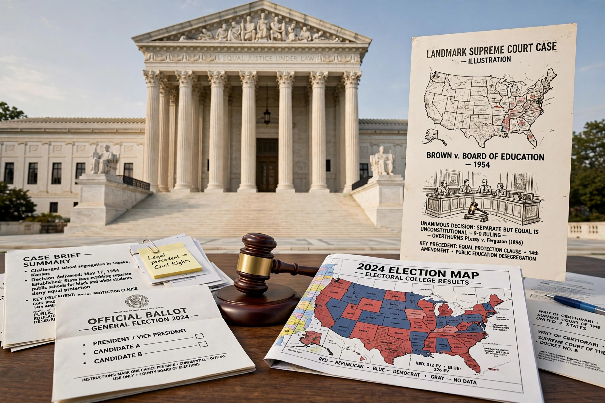

Moore v. Harper, 600 U.S. ___ (2023), is a landmark decision of the Supreme Court of the United States related to the independent state legislature theory (ISLT). In a 6–3 ruling, the Court rejected the theory that state legislatures have unchecked power over federal elections, holding that state courts may review election laws under state constitutions, subject to federal court review for transgressing ordinary judicial review.

| Moore v. Harper | |
|---|---|
| Decided | June 27, 2023 |
| Citation | 600 U.S. 1 |
| Chief Justice | John Roberts (author) |
| Vote | 6–3 |
After the 2020 census, North Carolina's Republican-led legislature drew congressional maps challenged as partisan gerrymanders. The North Carolina Supreme Court struck the maps under the state constitution. Legislators, led by House Speaker Timothy K. Moore, appealed, arguing the Elections Clause of the U.S. Constitution gives legislatures exclusive authority, immune from state court review.
Chief Justice Roberts, joined by Justices Sotomayor, Kagan, Kavanaugh, Barrett, and Jackson, held the Elections Clause does not insulate state legislatures from ordinary state judicial review. Justices Thomas, Alito, and Gorsuch dissented, largely on mootness grounds.
The decision preserved state court checks on election administration ahead of the 2024 elections and rejected the maximal version of ISLT.